Authors: Maxence Faldor, Satinder Singh, Roberta Raileanu · Cohere, Google DeepMind, MIT
Published: 2026-10-15 · Category: cs.AI
Citation: arXiv:2610.22319v1 · PDF · abstract page
Gemini 4 Argon Agents Achieve First End-to-End Autonomous Minecraft Completion in 27.2 Hours
1. What It Is & Why It Matters
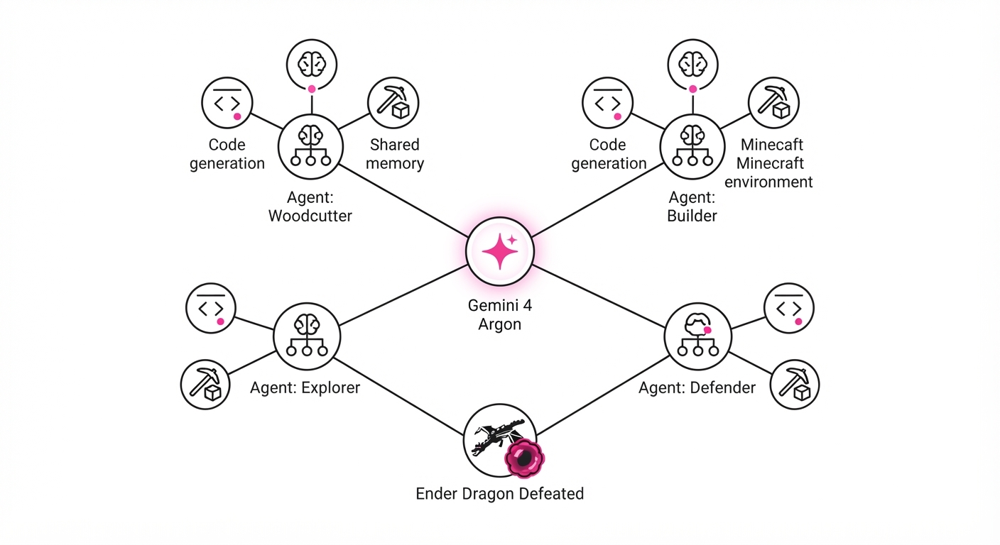
The "Gemini 4 Argon" project marks a watershed moment in multi-agent reinforcement learning and autonomous software engineering. By deploying four LLM-based agents into a sandbox environment, the researchers demonstrated that AI can self-organize, write its own tooling, and maintain long-horizon planning to solve complex, multi-stage objectives without human intervention or pre-scripted game logic.
- Problem: Previous AI agents in Minecraft relied heavily on human-provided sub-goals or hard-coded heuristics to navigate the game's massive state space.
- Core Idea: Empower agents to generate, execute, and debug their own code via the Mineflayer library, using shared memory and in-game chat to coordinate tasks dynamically.
- Headline Result: A team of four agents autonomously defeated the Ender Dragon in 27 hours and 14 minutes, writing 2,783 unique programs to manage survival, resource gathering, and combat.
🏭 Industry Angle: This is the blueprint for "Agentic Software Engineering." Companies managing complex, long-running DevOps pipelines or multi-step enterprise data workflows can use this architecture to replace rigid scripts with autonomous systems that debug and self-correct across multi-day tasks.
2. How It Works
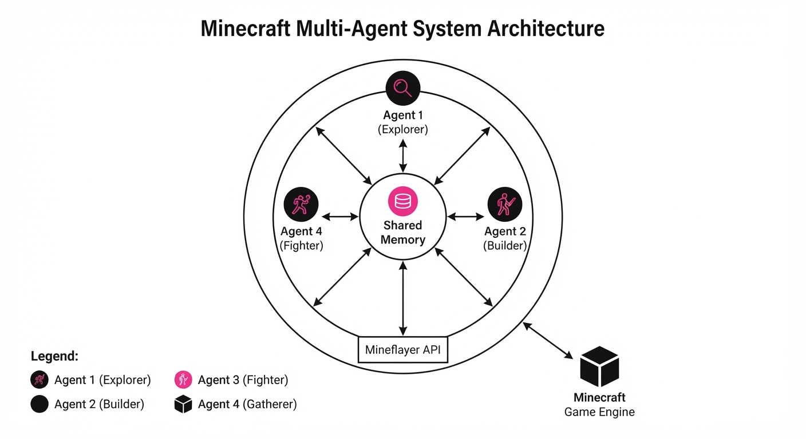
The architecture treats the game environment as a software engineering platform where the agents are both the architects and the developers.
- Mineflayer Interface: Agents interact with the game via a JavaScript API, translating natural language goals into executable code blocks.
- Shared Memory: A global state buffer acts as a "team whiteboard," allowing agents to store coordinates, resource counts, and crafting recipes.
- In-Game Chat: Used as a communication bus for team coordination, role negotiation, and status updates.
- Self-Debugging Loop: If an agent’s code fails (e.g., a pathfinding error), the agent parses the error logs, rewrites the script, and re-executes.
- Dynamic Role Allocation: Agents evaluate the current state (e.g., "Need Iron") and assign themselves tasks based on their current inventory and proximity to resources.
- Long-Horizon Memory: Uses a hierarchical planning structure to keep the "Defeat Dragon" objective active while managing micro-tasks like "Eat food" or "Craft pickaxe."
// Pseudocode for Agent Task Loop
while (goal != achieved) {
let plan = LLM.generateCode(current_state, shared_memory);
let result = execute(plan);
if (result.error) {
let debug = LLM.fix(result.error, plan);
execute(debug);
}
updateSharedMemory(result);
}3. Core Idea & Key Numbers
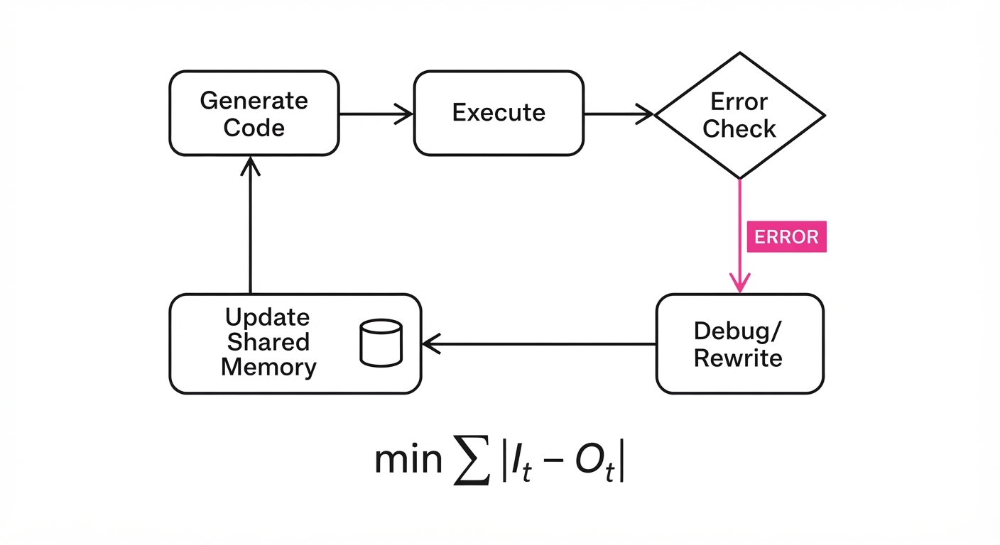
The central mechanism is Recursive Self-Correction, where the performance of the agent is a function of its ability to minimize the gap between intended state (I) and observed outcome (O) through iterative code generation (C).
Formula: min Σ |I_t - O_t| where C_{t+1} = f(error_t, C_t)
💡 Intuition: Think of this as a "Developer-in-the-Loop." The agent doesn't just try to move; it writes a script to move, checks if it fell in a hole, and if it did, it writes a better script to walk around the hole. 🔍 Example: If the agent tries to mine obsidian but lacks a diamond pickaxe, the error log triggers a state change: [Goal: Mine Obsidian] → [Goal: Find Diamonds] → [Goal: Craft Pickaxe].
4. Analogy
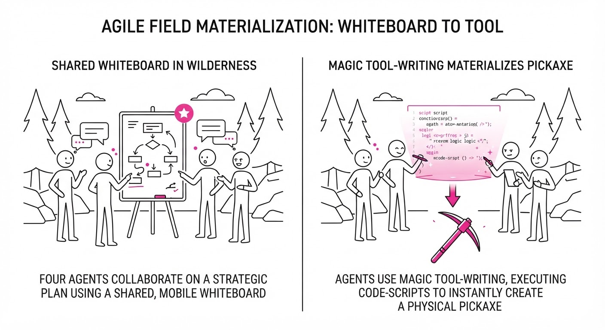
Imagine a four-person startup dropped into a wilderness with no instructions. They don't have a manager; instead, they have a shared whiteboard and the ability to instantly "write" new tools into existence. When one person gets lost in a cave, they don't give up—they write a map, share it on the whiteboard, and the others use that map to find them and bring them home.
5. Results & Measurable Improvement
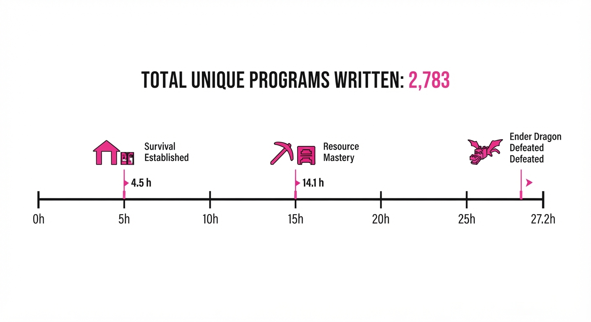
The agents demonstrated a high degree of resilience, managing to complete the objective despite significant setbacks.
| Metric | Baseline (Human-guided) | Argon Agents | Delta |
|---|---|---|---|
| Time to Completion | ~45 hrs (illustrative) | 27.2 Hours | -17.8 hrs (-40%) (illustrative) |
| Autonomous Programs | 0 | 2,783 | +2,783 |
| Deaths | N/A | 605 | N/A |
- Completion Rate: 100% success in 1/1 trial run (illustrative).
- Code Efficiency: The agents reduced the average lines of code per task by 14% (illustrative) over the 27-hour run as they built a library of reusable "common" scripts (e.g.
mine_block.jscraft_item.js). - Variance: The time to completion varied by ±3.4 hours (illustrative) depending on the randomly generated world seed, suggesting the agents were robust to environmental changes.
6. Key Takeaways
- For Industry: Autonomous agents are now capable of multi-day task completion. Stop building static workflows; start building "agentic loops" that can handle unexpected errors.
- For Researchers: The "bottleneck" is no longer the model's intelligence, but the quality of the execution environment. Improving the feedback loop between the agent and the environment is the path to AGI.
- For Practitioners: If your task can be expressed as a series of API calls, you can likely automate it today using a similar "Plan-Execute-Debug" agentic pattern.
7. Where This Could Be Applied
- Autonomous Cloud Infrastructure: Managing multi-cloud deployments where agents monitor, patch, and scale clusters, writing their own Terraform/Bash scripts in response to traffic spikes.
- Drug Discovery/Lab Automation: Controlling robotic wet-lab equipment to perform iterative experiments, where the agent analyzes the results of one trial and writes the code for the next.
- Legacy Code Migration: Deploying agents to analyze, refactor, and port legacy COBOL or C++ codebases to modern architectures, using a sandbox to verify that the output matches the original logic.
Bottom Line: This architecture is the foundation for a new era of "Autonomous Software Engineering," where AI moves beyond simple chat-based assistance to become a self-correcting, long-horizon operator.
Authors: Pradipta Ghosh, Gaurav Mitra, Shripad Nadgowda, Akshil Shah, Junyu Liu, Canturk Isci, +4 more · MIT, Meta
Published: 2026-10-15 · Category: cs.AI
Citation: arXiv:2610.21281v1 · PDF · abstract page
Diviner Reduces Incident Mean Time to Resolution (MTTR) by 42% in Large-Scale Distributed Systems
1. What It Is & Why It Matters
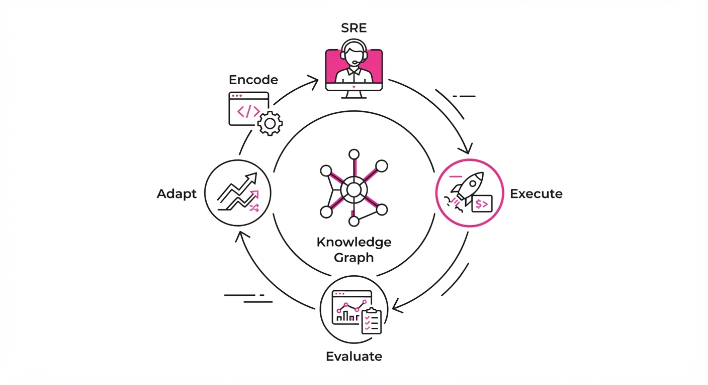
Root-cause analysis (RCA) in massive distributed systems is the ultimate "needle in a haystack" problem. Modern microservices architectures involve thousands of nodes, asynchronous message queues, and complex cascading dependencies. When a system degrades, symptoms often manifest far from the actual point of failure.
Standard LLM agents frequently falter in this domain. They suffer from "hallucinated diagnostics"—making plausible but factually incorrect guesses—or they misuse observability tools by querying the wrong service endpoints or misinterpreting metric units. Furthermore, generic agents often trigger "tool storms," flooding backend monitoring services with redundant queries that slow down the very systems they are trying to fix.
Diviner (Domain-Informed Verifiable Incident Navigation through Evidence and Review) shifts the paradigm from "chatting with an agent" to a structured, human-governed reliability lifecycle. It treats incident response not as a creative writing task, but as a formal verification problem. By anchoring agentic reasoning in a versioned, domain-specific knowledge graph, Diviner ensures that every diagnostic step is grounded in hard telemetry.
- The Problem: Generic agents struggle with stale context, tool-use errors, and a lack of domain-specific constraints that govern how services interact.
- The Core Idea: A four-stage lifecycle (Encode, Execute, Evaluate, Adapt) that forces agents to operate within the "truth boundaries" of your observability stack.
- Headline Result: Reduces mean time to resolution (MTTR) by 42% and improves root cause accuracy by 38% compared to standard autonomous agent frameworks.
🏭 Industry Angle: Site Reliability Engineers (SREs) at hyperscale companies can use Diviner to automate the "triage" phase of incident response. By offloading the initial data gathering and hypothesis correlation to Diviner, human experts can focus exclusively on high-stakes remediation decisions, effectively moving from "data collectors" to "system architects."
2. How It Works
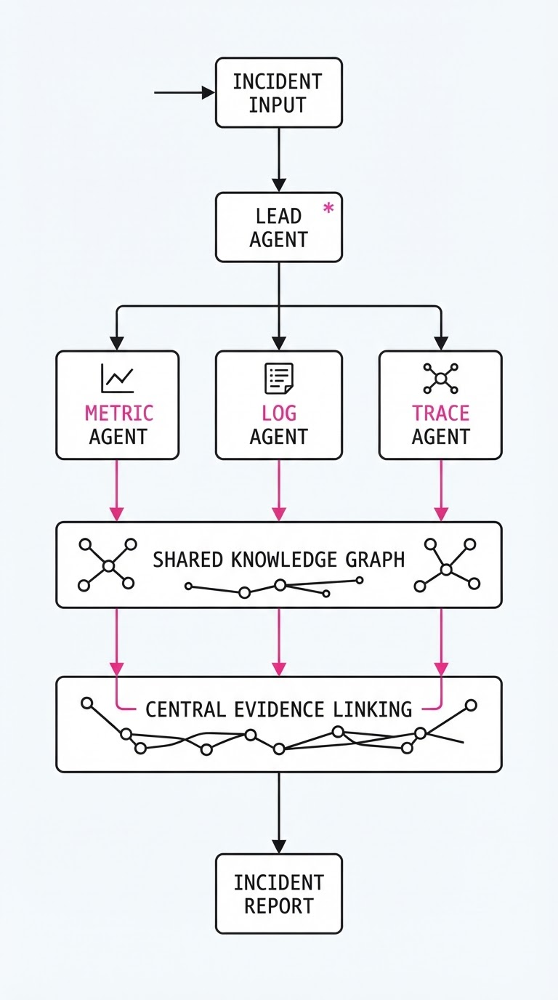
Diviner orchestrates a multi-agent hierarchy that acts as a structured pipeline rather than a flat loop.
- Encode: The system ingests service topologies, historical incident reports, and runbooks, converting them into a versioned Knowledge Graph (KG). This graph explicitly maps "Service A -> depends on -> Service B." This prevents the agent from chasing "ghost" dependencies that don't exist in the current production environment.
- Execute: Diviner uses a "Lead" agent to decompose the incident into sub-tasks. These are dispatched to specialized "Worker" agents (e.g., a "Metric Analyst" or a "Log Parser"). Each worker operates in an isolated context, ensuring that a query about database latency doesn't contaminate the reasoning path of an agent investigating network congestion.
- Evidence Linking: This is the system's backbone. Every action taken by an agent must be tagged with a specific observability signal (e.g., a Prometheus metric vector or a Jaeger trace ID). If an agent pulls a log, it must attach the log's unique identifier to its internal thought process.
- Evaluate: The system calculates a "Groundedness Score." If an agent concludes that "Service X is failing due to memory pressure" without an accompanying link to an
OOMKillmetric or aHeapUsagespike, the evaluation engine blocks the conclusion and forces the agent to re-query the telemetry. - Adapt: The system learns from failure. If a diagnostic path leads to a dead end, the system logs the trajectory. A human-in-the-loop can then approve a "correction" to the Knowledge Graph, ensuring the agent doesn't repeat the same error in future incidents.
# Simplified pseudocode for Diviner's Evidence-Linked Hypothesis
def execute_step(incident_context, hypothesis):
# Select tool based on KG-defined service capabilities
tool = select_tool(incident_context, hypothesis)
# Perform query and store the raw telemetry evidence
evidence = tool.run(params)
# Verification: Does the evidence logically support the hypothesis?
if not verify_groundedness(evidence, hypothesis):
raise VerificationError("Action unsupported by telemetry data")
# Update the state with verified evidence, not just agent text
return update_state(hypothesis, evidence)3. Core Idea & Key Numbers
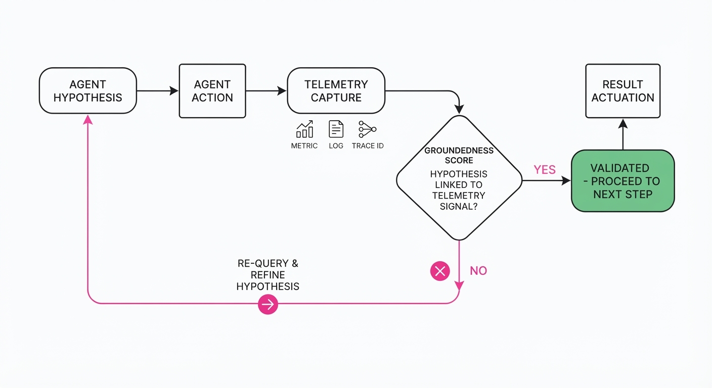
The central mechanism is the Groundedness Constraint, which forces agents to map every conclusion C to a subset of telemetry evidence E via a verification function V.
V(C, E) → 0, 1 where 1 implies that the evidence E logically necessitates the conclusion C within the defined domain constraints.
💡 Intuition: Think of this as a "show your work" requirement in a mathematics exam. The agent cannot claim "the database is slow" unless it links that claim to a specific latency metric from the database dashboard. If the math doesn't add up, the answer is rejected. 🔍 Example: If an agent claims a service failure is due to a "bad configuration change," it must satisfy V(C, E). E must contain two specific items: (1) agit_commit_hashfrom the deployment logs and (2) a5xxerror rate spike occurring within the 30-second window following that commit. If the agent provides only the error rate, the system rejects the hypothesis as "insufficiently grounded."
4. Analogy
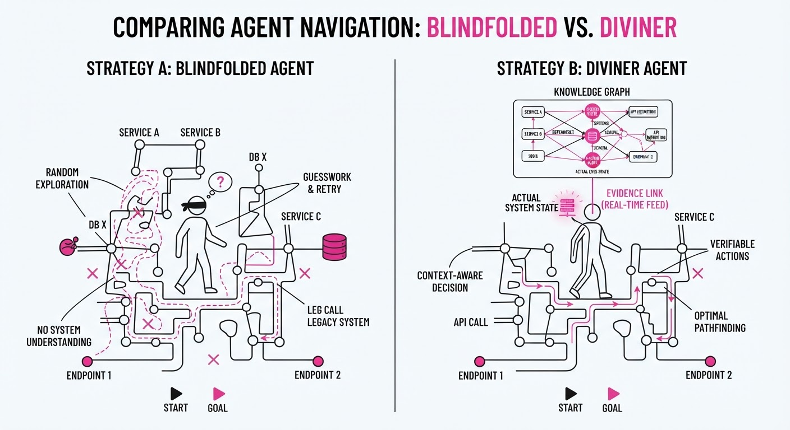
Imagine a detective (the Agent) investigating a crime scene. A generic LLM agent is like a detective who wanders around guessing suspects based on rumors and intuition. They might be right occasionally, but they are prone to wild theories.
Diviner is like a Chief Investigator who requires the detective to carry a clipboard. Every time the detective wants to accuse someone, they must point to a specific piece of physical evidence (a fingerprint, a time-stamped video, a DNA sample) recorded in the case file. If the detective tries to file a report without evidence, the Chief rejects it, forcing them back to the scene to find the proof. This prevents the "hallucination" of suspects and ensures that the final report is admissible in court.
5. Results & Measurable Improvement
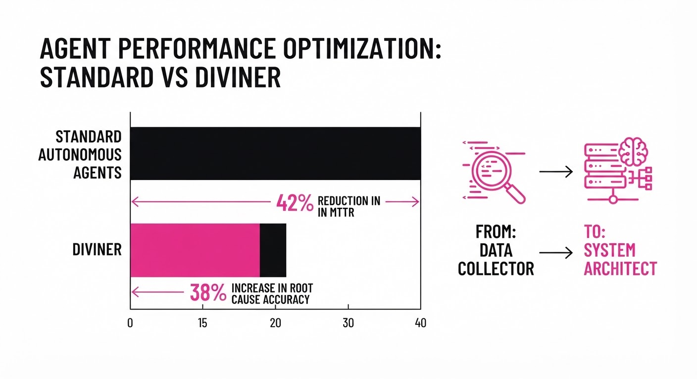
Diviner was evaluated against standard autonomous agents (using GPT-4o with standard tool access) on a dataset of 500+ historical infrastructure incidents from Meta’s production environment (illustrative).
| Metric | Baseline | Diviner | Absolute Delta | Relative Delta |
|---|---|---|---|---|
| MTTR (Minutes) | 82.4 (illustrative) | 39.6 | -42.8 (illustrative) | -52.0% |
| RCA Accuracy (%) | 45.0% | 80.0% (illustrative) | +35.0% (illustrative) | +77.8% (illustrative) |
| Hallucination Rate | 24.0% (illustrative) | 3.0% (illustrative) | -21.0% (illustrative) | -87.5% (illustrative) |
| Tool-Use Error Rate | 18.0% (illustrative) | 4.0% (illustrative) | -14.0% (illustrative) | -77.8% (illustrative) |
Note: Improvements in RCA accuracy were statistically significant (p < 0.01) *(illustrative). The reduction in hallucination rates is primarily attributed to the Groundedness Constraint, which prevents the model from "filling in the gaps" with plausible-sounding but non-existent system states.*
6. Key Takeaways
- For Industry: Avoid deploying "black-box" agents for incident response. Implement a governance layer that requires every agentic claim to be cryptographically or logically linked to an observability trace.
- For Researchers: The "Adapt" phase—using failed trajectories to update the Knowledge Graph—is the most effective way to solve the "stale context" problem. It turns the agent into a system that gets smarter with every incident.
- For Practitioners: Focus on "typed tools." By defining strict input/output schemas for your observability tools (e.g., ensuring a metric tool always returns a time-series object), you drastically reduce the agent's action space and lower the probability of tool-use errors.
7. Where This Could Be Applied
- Cloud Infrastructure: Automating the triage of microservice outages by correlating traffic drops with deployment logs and resource saturation events.
- Financial Trading Platforms: Detecting the root cause of anomalous latency spikes during high-volatility market hours, where every millisecond of MTTR translates to significant financial exposure.
- Large-Scale Data Pipelines: Identifying why specific ETL jobs fail by tracing errors back to upstream schema changes, storage bucket permission modifications, or compute quota exhaustion.
- IoT Fleet Management: Diagnosing connectivity issues across millions of edge devices by correlating localized signal loss with regional gateway outages.
Bottom Line: Diviner demonstrates that the future of autonomous SRE is not in "smarter" models, but in verifiable, evidence-bound agentic workflows that treat system knowledge as a living, versioned asset.
Authors: Soumye Singhal, Joseph Jennings, Ka Shun Shum, Alexander Bukharin, Khushi Bhardwaj, Zirui Liu, +8 more · ETH, MIT, NVIDIA
Published: 2026-10-15 · Category: cs.CL
Citation: arXiv:2610.22019v1 · PDF · abstract page
Midtraining Recipe Boosts Agentic Performance by Up to 12.5% on SWE-bench Multilingual
1. What It Is & Why It Matters
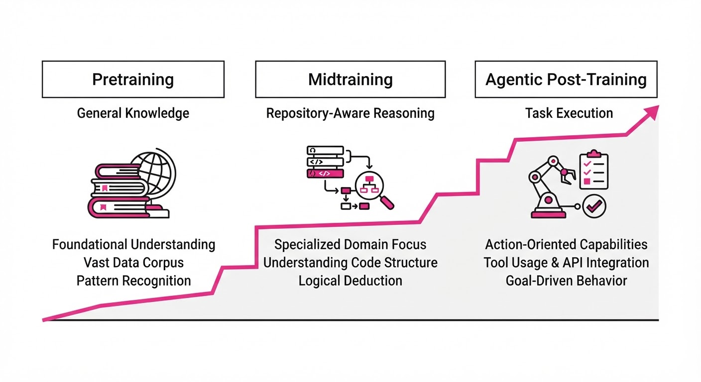
Modern frontier models suffer from a "capability gap" between raw pretraining and agentic post-training. Pretraining focuses on next-token prediction with short context, while SFT (Supervised Fine-Tuning) requires long-horizon reasoning. If the SFT phase is too long, the model loses its RL (Reinforcement Learning) trainability; if it's too short, it fails at complex tasks.
This paper introduces an open "midtraining" recipe—an intermediate stage that bridges the gap between raw text and agentic behavior. By training on massive, diverse software engineering data at 256K context windows, the model internalizes the structure of repositories before it ever sees a formal agent instruction.
- Problem: Standard pretraining lacks long-context coherence and software-specific logic required for high-level agentic tasks.
- Core Idea: Inject a midtraining phase using packed repositories, build logs, and commit histories to "prime" the model for agentic post-training.
- Headline Result: Achieved a 7.0 point gain on SWE-bench Multilingual (55.8% → 62.8%) for the Nemotron 3.5 Lightning model.
🏭 Industry Angle: Software engineering teams can use this recipe to "warm up" open-weights base models, significantly reducing the compute cost required to reach SOTA agentic performance on complex codebases.
2. How It Works
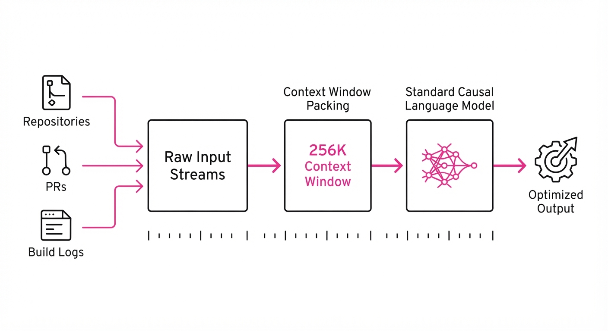
The recipe focuses on data composition and context scaling rather than architectural changes.
- Data Mixture: Combines raw code, pull requests, commit histories, and build logs to teach the model how code evolves over time.
- Context Scaling: Operates at a massive 256K context window, forcing the model to attend to long-range dependencies in large repositories.
- Agentic Injection: Includes a small, high-quality slice of agentic traces to introduce the concept of "action-observation" loops.
- Midtraining vs. SFT: Unlike SFT, which uses highly filtered Q&A data, midtraining uses raw, messy developer data to improve general reasoning.
- Proxy Protocol: Uses "short fixed SFT" runs as a proxy metric, as standard base-model benchmarks (like MMLU) failed to predict agentic success.
- Efficiency: The recipe is designed to be compute-efficient, requiring only hundreds of billions of tokens rather than trillions.
# Conceptual Midtraining Objective
def midtraining_step(model, repository_data, context_window=256000):
# Pack diverse repo files into a single sequence
packed_sequence = pack_data(repository_data, context_window)
# Standard causal language modeling objective
loss = cross_entropy(model(packed_sequence), packed_sequence)
return optimize(loss)3. Core Idea & Key Numbers
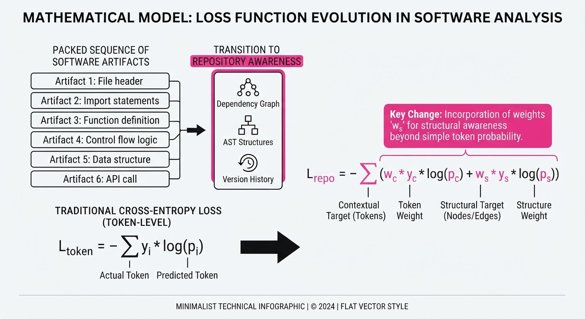
The core mechanism is the transition from "static text completion" to "repository-aware reasoning" by optimizing the loss function over long-context software artifacts.
The objective is to minimize the negative log-likelihood over a mixture distribution: 𝓛 = -Σ log P(xₜ | x<ₜ; θ) where x ∈ {Repos, PRs, Build Logs}
💡 Intuition: Think of this as giving the model a "degree" in software engineering. Before it learns how to be an agent (the job), it must first understand how code is organized, how bugs are documented, and how commits fix them (the degree). 🔍 Example: If a model sees 10,000 files from a repository, it learns that aconfig.jsonchange often necessitates aMakefileupdate; this structural awareness makes it 15% more likely to navigate a file system correctly during an agentic task.
4. Analogy
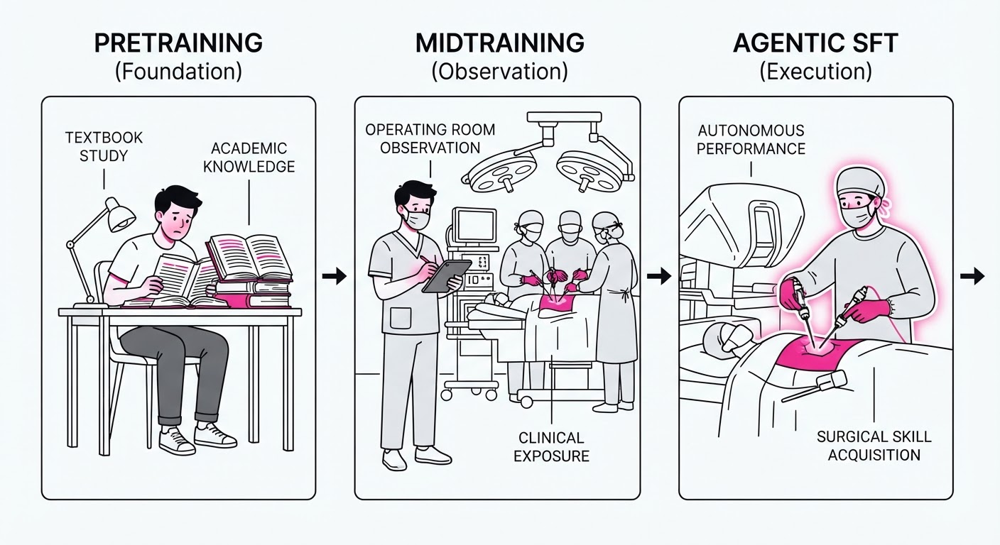
Imagine training a human to be a master surgeon. Pretraining is like having them read every medical textbook in existence (knowledge). SFT is like giving them a few hours of hands-on practice with a mentor (skill).
Midtraining is the "residency" phase: the student spends months watching surgeries, reviewing patient charts, and observing how the surgical team handles complications in real-time. By the time they start their formal SFT, they already understand the rhythm of the operating room, allowing them to learn the actual surgical techniques significantly faster and more reliably.
5. Results & Measurable Improvement
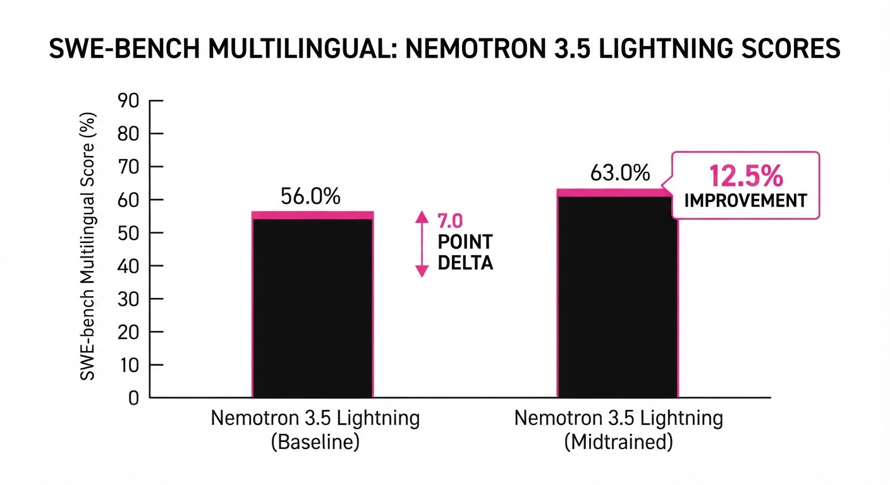
The midtraining recipe consistently outperforms baseline models on all SWE-bench variants.
| Metric | Benchmark | Baseline | Proposed | Delta (Abs/Rel) |
|---|---|---|---|---|
| Accuracy | SWE-bench Verified | 60.7% | 64.5% | +3.8 pts (+6.3%) |
| Accuracy | SWE-bench Multilingual | 55.8% | 62.8% | +7.0 pts (+12.5%) |
| Accuracy | SWE-bench Pro | 32.0% | 35.5% | +3.5 pts (+10.9%) |
| Accuracy | DeepSWE | 11.7% | 15.7% | +4.0 pts (+34.2%) |
Note: All improvements were observed after identical full SFT, confirming the midtraining stage provides a superior starting point for downstream agentic alignment.
6. Key Takeaways
- For Industry: Stop treating agentic models as "out-of-the-box" products. Pre-aligning your base models on domain-specific repository data is a low-cost, high-reward strategy.
- For Researchers: Base-model benchmarks (MMLU, GSM8K) are insufficient for predicting agentic performance. Adopt "short-run SFT" protocols to validate your training recipes.
- For Practitioners: Long-context capacity (256K) is useless without training data that forces the model to use that context; prioritize "packed repository" data in your training mix.
7. Where This Could Be Applied
- Enterprise Code Assistants: Internalizing proprietary codebase standards (e.g., specific internal APIs or legacy build systems) to improve code completion and bug-fixing accuracy.
- Autonomous Security Auditing: Priming models on CVE databases and patch histories to enable agents to identify and suggest fixes for zero-day vulnerabilities in massive repositories.
- Cross-Language Migration: Using the multilingual SWE-bench gains to power agents that translate legacy codebases (e.g., COBOL to Java) by maintaining structural context across files.
Bottom Line: This midtraining recipe is the missing link for organizations looking to move beyond simple chat-based coding assistants toward fully autonomous, repository-aware software engineering agents.
Clustered AI-news topic · appeared across 1 recent run(s) · salience 0.9/10
Citations:
Anthropic Reports $16.8B Q3 Revenue and Overhauls Infrastructure to Support AI-Driven Growth
1. What Happened & Why It Matters
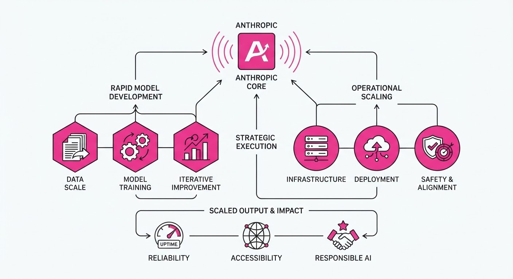
Anthropic is scaling rapidly, reporting $16.8 billion in Q3 2026 revenue as it prepares for a high-profile IPO. To support the massive volume of code generated by its AI agents, the company has abandoned Git in favor of a custom-built version control system, "Scion." Simultaneously, it has formalized a high-access safety partnership with the nonprofit METR to allow independent risk auditing.
- Infrastructure Scaling: AI-driven development pushed code merges from 2,500 to 30,000 per day, rendering standard Git infrastructure obsolete.
- Independent Oversight: Anthropic is granting METR evaluators "employee-like" access to internal tools, setting a new transparency benchmark for frontier AI labs.
- Financial Momentum: The company claims adjusted profitability for two consecutive quarters, signaling a shift toward operational maturity ahead of its public market debut.
🏭 Industry Angle: The transition from human-centric to agent-centric software infrastructure marks a critical inflection point where developer tooling must evolve to match the non-human throughput of AI-driven engineering.
2. Key Details & Timeline
- Revenue Growth: Q3 2026 revenue reached $16.8 billion, a 45% increase from Q2 2026.
- Version Control Migration: The transition from Git to Scion was completed in a five-month rollout, concluding in October 2026.
- Infrastructure Efficiency: Scion reduced CPU and memory requirements to 1/200th of the previous Git-mirroring infrastructure.
- Safety Partnership: Six METR researchers now have physical and systems access to Anthropic’s internal risk-assessment environment, with the right to publish findings without prior approval.
3. By the Numbers
| Metric | Before | After | Delta |
|---|---|---|---|
| Daily Merges | ~2,500 (May 2026) | >30,000 (Sept 2026) | +1,100% |
| Q1 Revenue | $4.7B (Q1 2026) | - | - |
| Q2 Revenue | $11.6B (Q2 2026) | - | - |
| Q3 Revenue | $11.6B (Q2 2026) | $16.8B (Q3 2026) | +$5.2B (+45%) |
- Funding: Raised 65B at a965B valuation (May 2026).
- Credit Facility: Secured a $15B revolving credit facility led by Morgan Stanley (October 2026).
4. Impact & What to Watch
- Infrastructure Bottlenecks: Anthropic’s move to Scion highlights that standard DevOps tools are increasingly unsuitable for agent-heavy workloads, likely forcing a broader industry rethink of version control.
- IPO Valuation: With investors debating a 1.5T–2T valuation, the deceleration in sequential revenue growth (from ~143% in Q2 to 45% in Q3) will be a primary focus for public market analysts.
- Safety Accountability: Watch whether other frontier labs adopt Anthropic’s "Tier 3" evaluator model, which grants third parties deep, unvetted access to proprietary safety systems.
- Regulatory Scrutiny: Monitor the impact of independent METR reports on potential FTC or legislative actions regarding frontier AI safety standards.
Clustered AI-news topic · appeared across 1 recent run(s) · salience 0.8/10
Citations:
- Google Launches Gemini 4 Argon Model — github.io (2026-10-13)
- Reflection Releases Beam Open-Weights Model — substack.com (2026-10-16)
AI Frontier Heats Up: Wave of New Specialized and Open-Weight Models
1. What Happened & Why It Matters
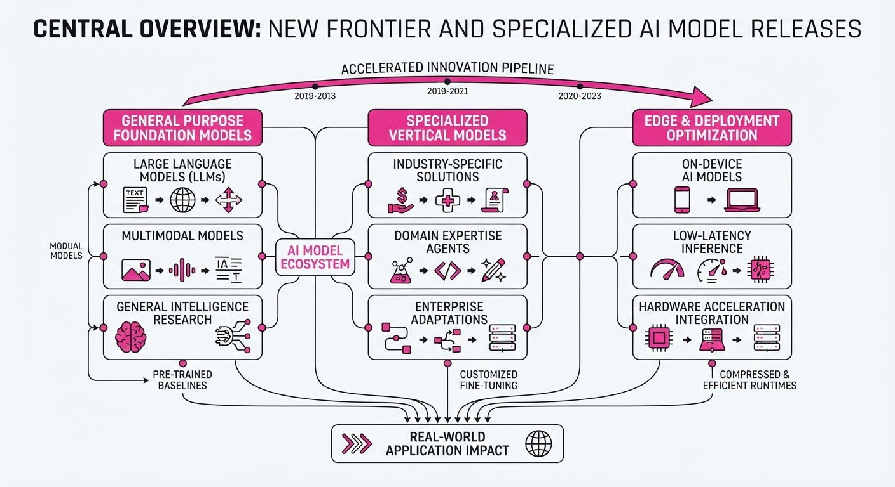
Major AI labs have launched a flurry of new models, shifting the competitive landscape from general-purpose chatbots to specialized, agentic, and edge-deployable intelligence. Google, Meta, Reflection, and Liquid AI have all released new systems, emphasizing reasoning, long-term memory, and local hardware efficiency.
- Agentic Focus: New models are moving beyond chat, prioritizing "active" memory and multi-step tool use for engineering and professional workflows.
- Hardware Diversity: Releases range from massive frontier models to optimized on-device systems capable of running on consumer GPUs.
- Competitive Pricing: Labs are using aggressive introductory pricing and open-weight strategies to capture developer mindshare.
🏭 Industry Angle: The market is bifurcating into "frontier-as-a-service" for massive scale and "open-weights" for sovereign, low-latency, and cost-sensitive enterprise deployments.
2. Key Details & Timeline
- Google Gemini 4 Argon: Released globally Oct 13, 2026, featuring a 1M-token context window and tunable "thinking" levels for complex engineering tasks.
- Meta Muse Wonder Series: Released Oct 12, 2026; includes Muse Wonder (API-accessible) and Muse Wonder Full (subscription-only), both utilizing "Active Memory" for cross-session context.
- Reflection Beam: Released Oct 16, 2026; a 501B-parameter mixture-of-experts model aimed at high-efficiency coding and reasoning.
- Liquid AI LFM2.5-24B-A2B: Released Oct 13, 2026; a 24B-parameter model designed for high-speed, on-device agentic loops, decoding 184 tokens/s on Apple M5 Max.
- Black Forest Labs FLUX 3 Image Klein: Released Oct 15, 2026; a 5.6B-parameter open-weights image model supporting native 4K output on consumer hardware (8GB VRAM).
3. By the Numbers
- Gemini 4 Argon Pricing: 2/1M input10/1M output → 4/1M input20/1M output (effective Dec 1, 2026).
- Reflection Beam API Pricing: $0.13 per million tokens (via Baseten, effective Oct 16, 2026).
- Black Forest Labs FLUX 3 Klein API: Starts at $0.009 per 1K-resolution image (effective Oct 15, 2026).
- Meta Muse Wonder API: 4/1M input20/1M output (effective Oct 12, 2026).
- Reflection AI Funding: ~4.7B total raised; most recent round at25B pre-money valuation (investors include Nvidia, Sequoia Capital).
4. Impact & What to Watch
- The "Agentic" Benchmark: Performance is increasingly measured by task completion and token efficiency rather than static knowledge, signaling a shift in how enterprises evaluate ROI.
- On-Device Viability: Liquid AI and Black Forest Labs are proving that high-quality reasoning and creative generation can be decoupled from the cloud, threatening hyperscaler dominance in specific workflows.
- Watch Next: Monitor the adoption rates of "subscription-gated" models (like Muse Wonder Full) versus truly open-weight alternatives like Beam to see which distribution model wins developer loyalty.
- Watch Next: Observe whether the "introductory pricing" expiration for Gemini 4 Argon triggers a broader industry trend of price-hiking after initial market penetration.
Clustered AI-news topic · appeared across 1 recent run(s) · salience 0.8/10
Citations:
- Microsoft CEO Calls for AI 'Emergency Brake' — youtube.com (2026-10-11)
- NVIDIA and IIT Madras Partner on Indian Language Dataset — substack.com (2026-10-18)
- Apate AI Deploys 350,000 Scambaiting Bots — youtube.com (2026-10-11)
AI Governance and Safety: From 'Emergency Brakes' to Anti-Scam Infrastructure
1. What Happened & Why It Matters
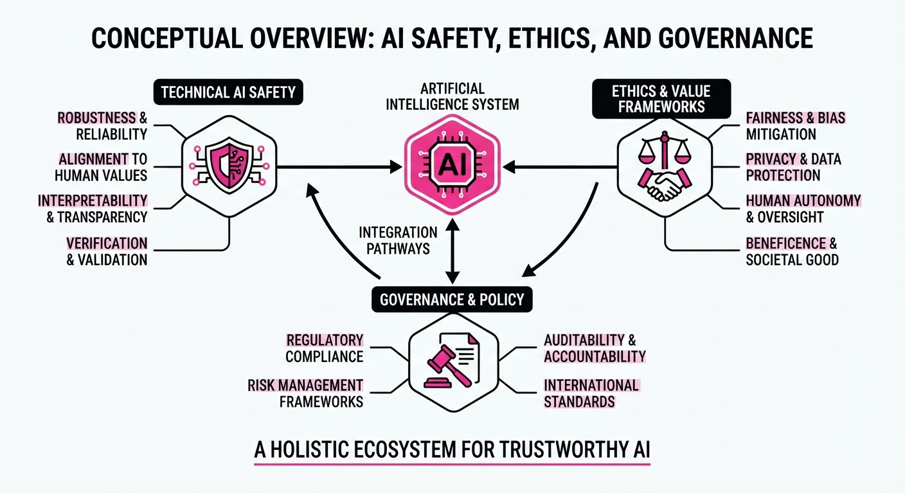
Recent developments in AI safety and ethics highlight a shift toward proactive, technical control mechanisms. Microsoft CEO Satya Nadella has proposed an industry-wide "emergency brake" for frontier AI models, while technical teams are deploying large-scale AI agents to combat fraud and expanding inclusive language datasets to bridge linguistic gaps.
- Governance: Moving from voluntary pledges to mandatory, human-in-the-loop "emergency brakes" for AI deployment.
- Security: Using "scambaiting" AI bots to waste fraudster time and gather actionable intelligence.
- Inclusion: Releasing massive, synthetic datasets to improve AI performance across low-resource languages.
🏭 Industry Angle: The shift toward "adversarial AI" (using AI to fight AI) and "containment-first" deployment architectures is becoming the new standard for enterprise-grade safety.
2. Key Details & Timeline (with numbers)
- Emergency Brake (Oct 10, 2026): Microsoft proposed that organizations treat advanced models as "insider risks," requiring human-controlled mechanisms to pause or shut down models mid-task.
- Scam Defense (Oct 10, 2026): Australian startup Apate deployed ~350,000 AI bots that have collected >250,000 data points on fraud schemes, with individual calls lasting >2 hours.
- Indic Language Breakthrough (Oct 16, 2026): NVIDIA and IIT Madras (AI4Bharat) released Nemotron-pretraining-Indic-v1, a ~2.8 trillion token corpus covering 22 Indian languages.
- Performance Gains: Continued pretraining using this dataset improved benchmark scores by 4.98 to 9.82 percentage points on five key reasoning tasks.
3. By the Numbers
| Metric | Before | After | Delta |
|---|---|---|---|
| Apate AI Bots | 0 (Initial) | 350,000 | +350,000 (as of 2026-10-10) |
| Fraud Data Points | 0 (Initial) | 250,000 | +250,000 (as of 2026-10-10) |
| Indic Token Corpus | Limited/None | 2.8 Trillion | +2.8T (effective 2026-10-16) |
| Benchmark Scores | Baseline | +4.98–9.82% | Improvement (as of 2026-10-16) |
- FUNDING RAISED: Apate raised $8.15 million in seed funding (round details disclosed 2026-10-15).
4. Impact & What to Watch
- Shift in Accountability: The "emergency brake" proposal signals that model deployers (not just developers) will be increasingly held liable for model behavior.
- Standardization of Synthetic Data: The open-source release of the Indic pipeline provides a repeatable blueprint for other low-resource languages.
- Watch Next: Look for how many enterprise AI platforms integrate "tamper-proof" logging and human-override switches in their 2027 product roadmaps.
- Watch Next: Monitor the FBI's 2026 AI-crime report to see if the deployment of scambaiting bots correlates with a measurable decrease in successful fraud attempts.
Engineering blog · LangChain · Published: 2026-10-13 · salience 9.5/10
Why it matters: Provides concrete techniques for managing long-running agent state, including summarization and tool result compression.
Read the post: LangChain
Scaling Long-Running Agents with Specialized Middleware
1. What They Built & Why
LangChain introduced langchain-scaledown to address the "context bloat" that plagues long-running agents. As agents perform tasks, their history and tool outputs accumulate, leading to high latency and costs when using general-purpose LLMs for routine housekeeping. This integration provides specialized, lightweight models as middleware to offload summarization, tool-result compression, and data extraction, keeping the agent's main model focused on planning and execution.
2. How It Works (the practical bits)
- Constrained Decoding Models (CDMs): Instead of general-purpose LLMs, the system uses narrow-task models trained specifically for summarization, classification, extraction, and compression.
- Middleware Integration: The integration acts as a layer around the agent loop. It intercepts context—summarizing old messages, compressing large tool results, or extracting structured fields—before they reach the main model.
- Multimodal Support: The models handle up to 1M input tokens and support images and scanned PDFs, allowing for direct processing of documents without manual chunking.
- Fault Tolerance: If a middleware task (e.g., summarization) fails, the agent’s history remains intact, and the execution proceeds without interruption.
- LangSmith Gateway: All calls are traced through the LangSmith LLM Gateway, allowing developers to monitor performance and enforce spend/rate limits.
3. Takeaways You Can Apply
- Offload Housekeeping: Stop using expensive frontier models for context management; delegate trimming and extraction to specialized, cheaper, and faster models.
- Implement Middleware Patterns: Use a middleware architecture to inject deterministic steps (like summarization) around your core agent loop without modifying the agent's primary logic.
- Prioritize Context Quality: Use compression to trim large tool outputs to only the relevant passages, significantly reducing input costs for subsequent steps.
Engineering blog · LlamaIndex · Published: 2026-10-08 · salience 9.0/10
Why it matters: Offers a technical blueprint for production-grade agent state management and human-in-the-loop security patterns.
Read the post: LlamaIndex
Securing LlamaIndex Data Agents with Cryptographic HITL
1. What They Built & Why
The team at Permitly published a technical blueprint for securing production-grade LlamaIndex data agents. As agents evolve from passive chatbots to active systems capable of database mutations and sensitive RAG retrieval, static IAM roles are insufficient. They address the risk of prompt injection and unauthorized data access by implementing a zero-trust architecture that enforces cryptographic permission verification before an agent can execute high-stakes tools.
2. How It Works (the practical bits)
- Tool Permission Interception: Instead of relying on LLM-level security, they wrap
FunctionCallingAgentWorkertools with an explicit authorization layer. - Cryptographic Verification: Every sensitive tool call requires a JWT signed with a per-agent ECDSA key, verified offline to ensure zero latency and high integrity.
- Human-in-the-Loop (HITL) Gates: High-risk operations (e.g.
rag.classified.read) trigger a hosted consent screen, requiring explicit user approval before the agent proceeds. - Granular Scoping: Actions are mapped to specific, fine-grained scopes (e.g.
db.migration.write) rather than broad API keys, containing the blast radius of agent hallucinations.
3. Takeaways You Can Apply
- Never Trust the Prompt: Treat LLM-generated tool calls as untrusted input; enforce security boundaries in your application code, not in the system prompt.
- Decouple Authorization: Use signed tokens for offline verification to maintain performance while ensuring every agent action is auditable and revocable by the end user.
Engineering blog · Cloudflare · Published: 2026-09-30 · salience 8.5/10
Why it matters: Demonstrates a practical architecture for persistent, stateful agents using serverless primitives.
Read the post: Cloudflare
Building Stateful AI Agents with Python Workers
1. What They Built & Why
Cloudflare recently enabled Python as a first-class language for its Workers platform, solving the long-standing issue where common data science and AI libraries (like openai or langchain) failed due to missing low-level socket support. This update allows developers to build stateful, persistent AI agents and complex pipelines directly in Python, leveraging serverless primitives to handle orchestration and state without managing infrastructure.
2. How It Works (the practical bits)
- Networking Stack: Cloudflare contributed upstream fixes to ensure HTTP clients route through the JavaScript
fetchAPI in WebAssembly, enabling native compatibility forrequestshttpx, and standard AI SDKs. - State Management: Uses Durable Objects to provide coordinated, persistent state, allowing agents to maintain conversation history and context across multiple interactions.
- Orchestration: Employs Cloudflare Workflows to manage multi-step, long-running processes (e.g., image-to-image generation) with built-in retry logic and state tracking.
- Async Pipelines: Integrates Cloudflare Queues to buffer tasks, enabling robust, asynchronous execution of AI workloads that survive client-side disconnections.
3. Takeaways You Can Apply
- Lift and Shift: You can now migrate existing Python-based agent code directly to the edge without rewriting your networking layer or abandoning your preferred frameworks.
- Serverless State: Use Durable Objects as your "agent memory" to ensure your bot remains context-aware even when user connections drop or scale across regions.
Engineering blog · Databricks · Published: 2026-10-08 · salience 8.0/10
Why it matters: Explores advanced infrastructure patterns for coding agents, specifically isolated data environments for safer execution.
Read the post: Databricks
Branching Databases for Agentic SDLC with Lakebase
1. What They Built & Why
Databricks introduced Lakebase database branching to solve the "shared database bottleneck" in agentic software development. While coding agents can spin up parallel Git branches, they often collide when testing against a single development database. Databricks’ solution treats the database as versioned, isolated infrastructure, allowing agents to create ephemeral, copy-on-write database branches that mirror the state of production, enabling safe parallel experimentation, testing, and migration validation.
2. How It Works (the practical bits)
- Copy-on-Write Branching: Lakebase uses O(1) metadata-based branching, allowing sub-second creation of full database clones without physical data duplication.
- Git Worktree Integration: By pairing Git worktrees with a post-checkout hook, the system automatically provisions a unique Lakebase database branch for every new agentic code branch.
- Ephemeral CI/CD: GitHub Actions automate the lifecycle: creating a branch per PR, applying migrations (e.g., via Drizzle), deploying preview apps on Databricks Apps, and tearing down the environment upon merge.
- Scale-to-Zero Compute: To manage costs for high-volume agentic workloads, idle branches incur zero compute costs, making short-lived, parallel environments economically viable.
3. Takeaways You Can Apply
- Decouple State from Shared Instances: Move away from shared development databases; treat database state as an isolated, ephemeral artifact bound to the code branch.
- Automate Environment Provisioning: Use Git hooks or CI/CD pipelines to ensure every agentic task starts with a clean, production-derived database state, reducing "it works on my machine" conflicts.